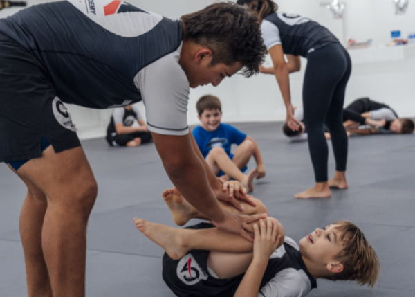
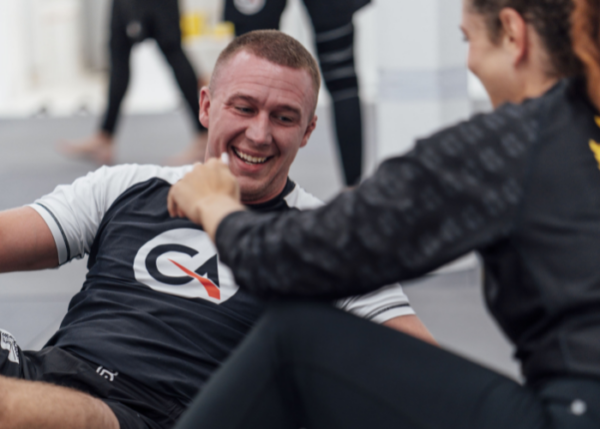
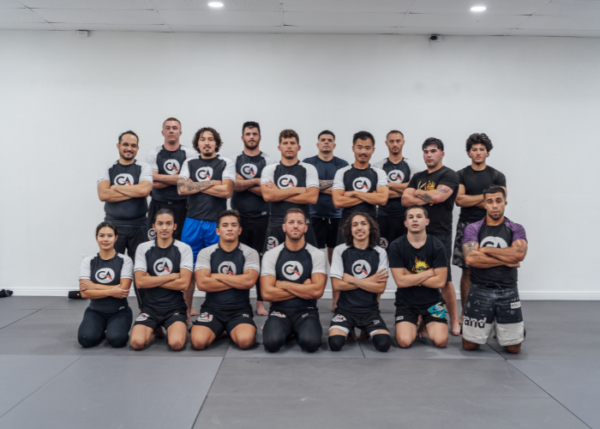

No-Gi is the shared language.
Dan built around the discipline he trained exclusively and the growing American interest in the game without the jacket.
No-Gi spotlight · Bradenton, Florida
Specialist No-Gi Jiu-Jitsu and Submission Grappling—from first-day beginners to world-class competitors.

Official academy photography · December 2024
Why this room stands out
The academy’s public identity is unusually clear: it specializes in training without the Gi, serves beginners alongside high-level competitors, and grounds its system in a direct Royce Gracie affiliation.
Dan Martinez has specialized in No-Gi Jiu-Jitsu for nearly 15 years. The academy lists him as a No-Gi World Champion, Combat Jiu-Jitsu World Champion, and a 2019 ADCC World Championship invitee.
Biographical details are sourced from the academy’s official home and instructor pages. Culture and curriculum details come from Dan’s written responses to The Way OSS.



What the coach says
Dan built around the discipline he trained exclusively and the growing American interest in the game without the jacket.
The first thirty days prioritize recognizing guard positions and escaping the bottom before attacks are added.
In the everyday All Levels class, hobbyists and competitors work together, and higher-level partners help build the less experienced.
What an in-person spotlight adds
Explore the academy
The academy’s official site has its current information request flow. A future claimed Way profile would connect this spotlight directly to the verified schedule and first-visit action.
Source ledger
Sources: written responses from Coach Dan Martinez received August 10, 2026; academy home, instructor, adult program, and youth program pages; academy official website photography. This independent spotlight does not imply partnership. Confirm current scheduling and program details with the academy.